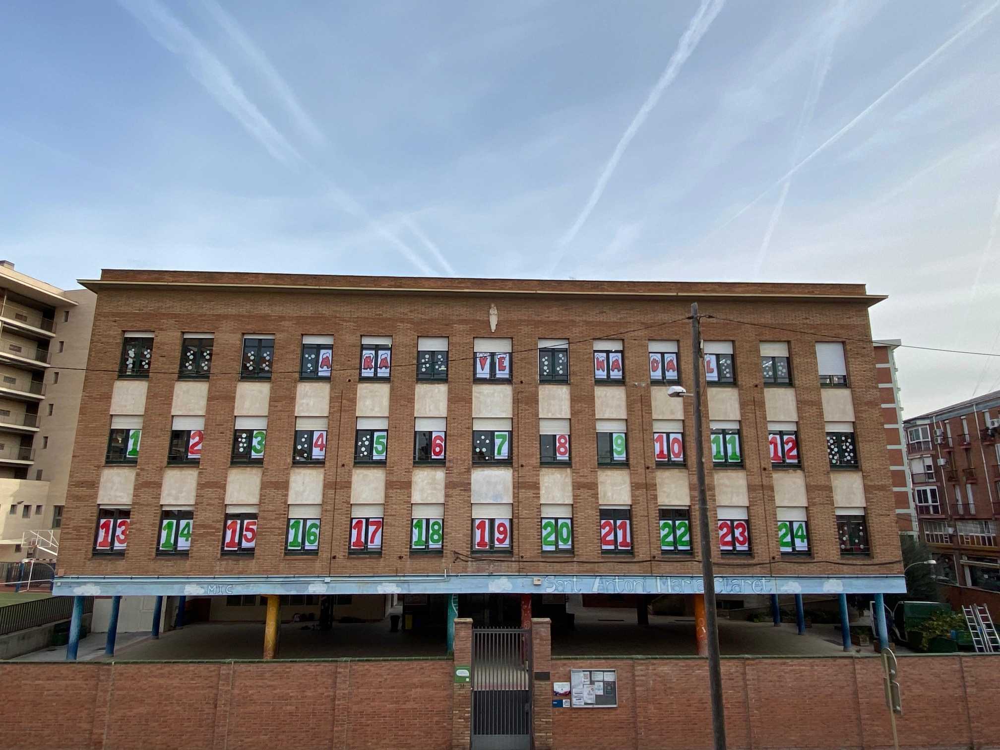
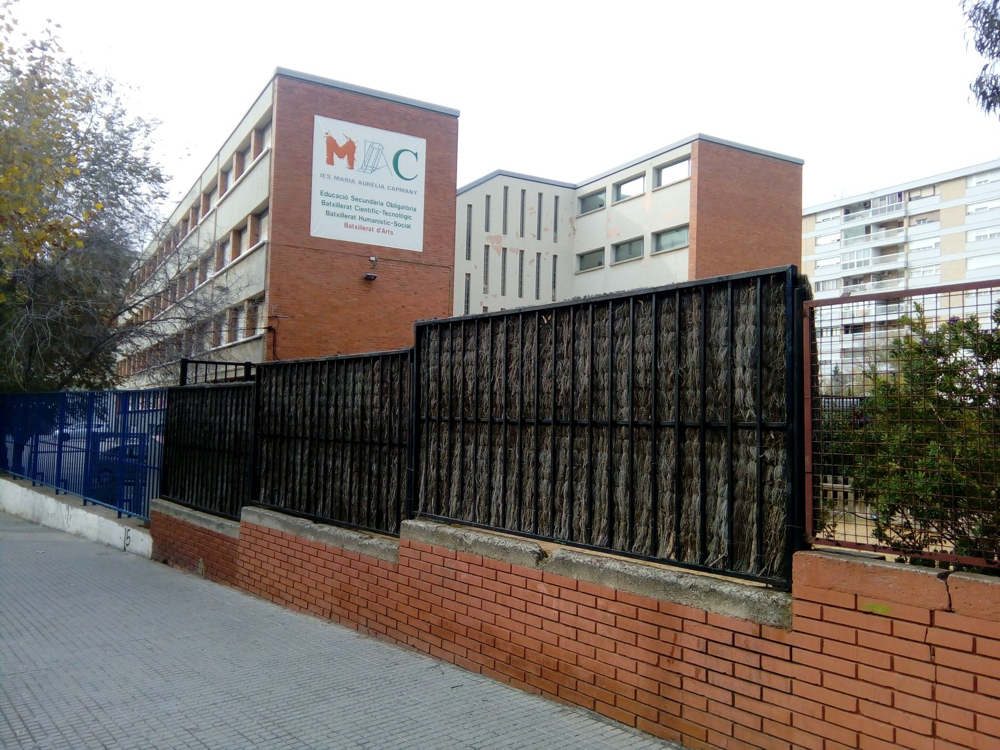

Estudis i programació
Formació acadèmica
Actualment estic fent un grau superior de desenvolupament d'aplicacions web
- ESO
Col·legi Sant Antoni Maria Claret (2019-2023)

- Títol de batxillerat
INS Maria Aurelia Capmany (2023-2025)

Llenguatges coneguts
- Notepad
- Pycharm
- Visual Studio Code